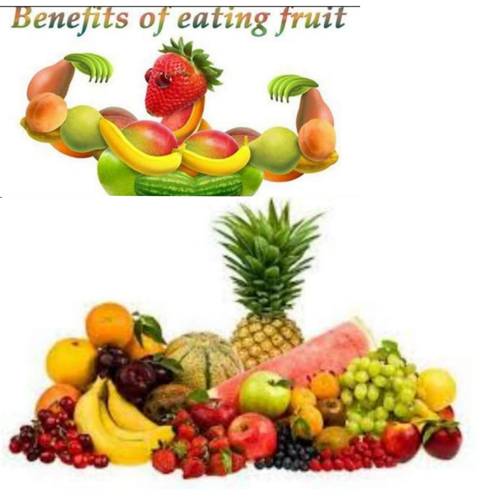

Fruits information
Fruits and vegetables contains important vitamins,minerals and plant chemicals.they also contain fiber.there are many verities of fruits and vegitables available available and many ways to prepare,cook and server them. A diet height in fruit and vegetables can help protect you against cancer,diabetes and heart diesease.

Fruits a d vegetables should be an important part of your daily diet.they are naturally good and contain vitamins and minerals that can help to keep you healthy.they can also help protect against some diseases.
Most Australians will benefit from eating more fruit and vegetables as part of a well balanced,health diet and an active lifestyle.There are many varieties of fruits and vegetables available and many ways to prepare,cook and server them